地图附录：二十六幅研究地图
地图为研究示意图，底图采用 Natural Earth 等公开数据；不作为国界、主权或精确距离依据。
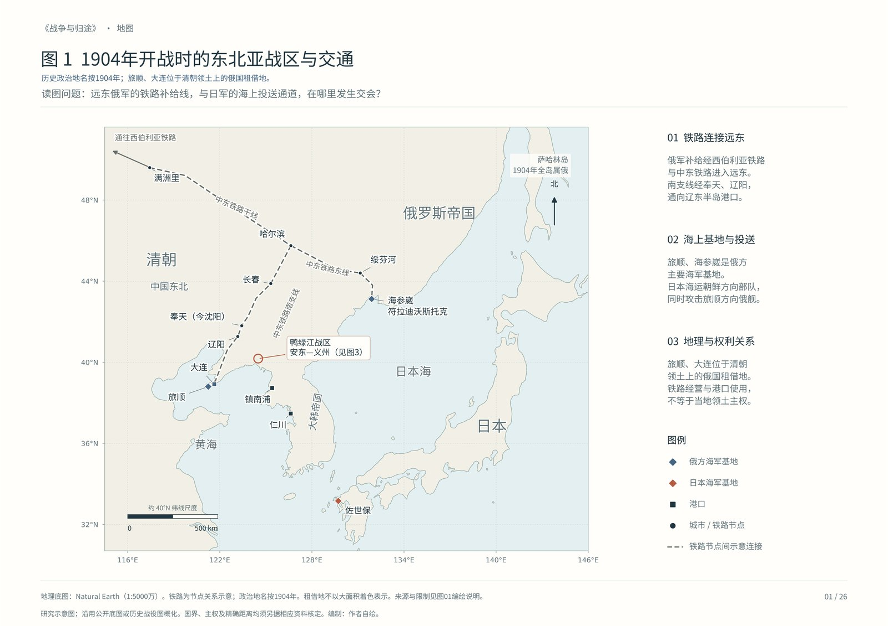
铁路把俄国增援送向哈尔滨、奉天和辽东港口，日本则通过海路把部队投向朝鲜。旅顺与海参崴分处两个海域，既能威胁日本运输，也增加俄舰集中行动的困难。
沿铁路节点读俄军的增援方向，再比较日本各登陆港。图中旅大为清朝领土上的俄国租借地；线路展示交通联系，城市之间的距离不代表运能。
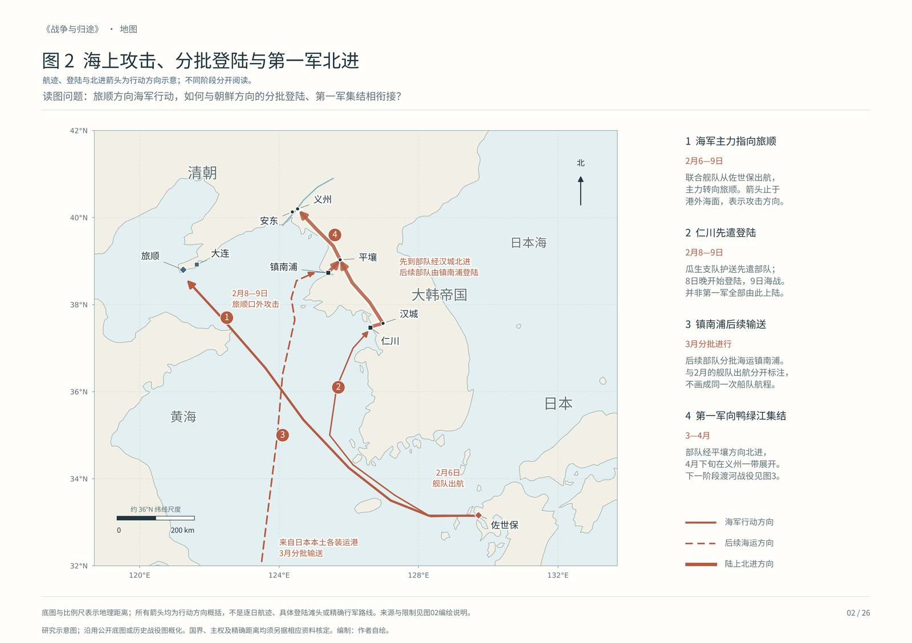
旅顺方向的海上攻击，与仁川先遣登陆同时展开。后续部队在三月分批进入镇南浦，再沿朝鲜道路北进，到四月下旬在鸭绿江一带形成能够渡河作战的第一军。
先分开看二月舰队出航与三月后续海运，再追踪陆上集结。海军攻击箭头止于旅顺港外；不同箭头连接的是若干阶段，具体航迹和行军日程由正文说明。
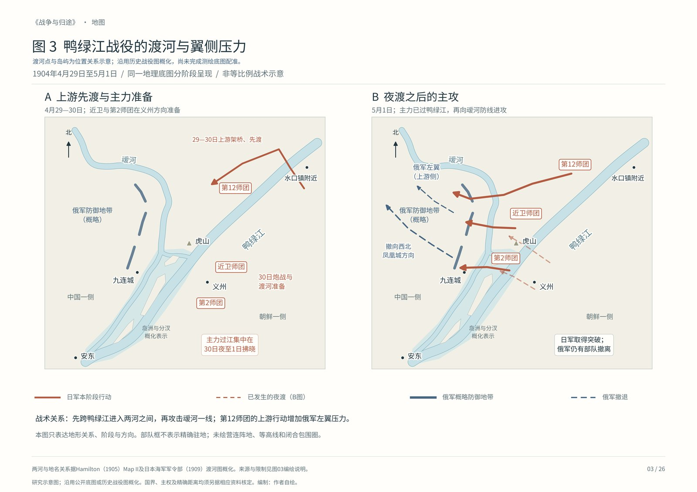
左图表现四月二十九日至三十日的上游先渡和主力准备，右图接续五月一日向叆河防线进攻。第十二师团从上游展开，与正面攻击共同迫使俄军兼顾阵地和退路。
比较两幅图中河流、桥头和俄军防御地带的位置。日军先越过鸭绿江，再向叆河右岸阵地施压；俄军仍有部队退出，图中的方向箭头保留了这一结果。
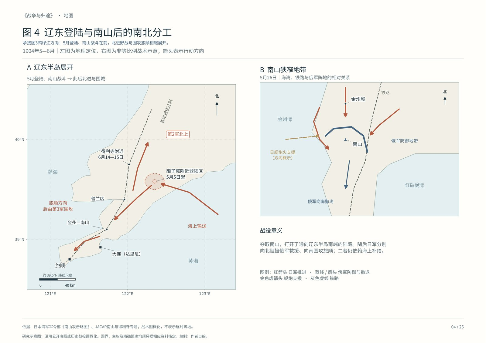
左图把貔子窝东岸登陆、南山争夺与后续南北分工连在一起，右图展示金州以南狭窄地峡。西侧近岸推进和舰炮支援帮助日军打开通路，俄军随后向南撤离。 本页采用文字校订版。
先分清五月登陆、五月二十六日南山战斗和六月北进。右图西侧标出日舰炮火，东侧海狸号对俄军的支援见正文；左右两图展示的是先后展开的任务。
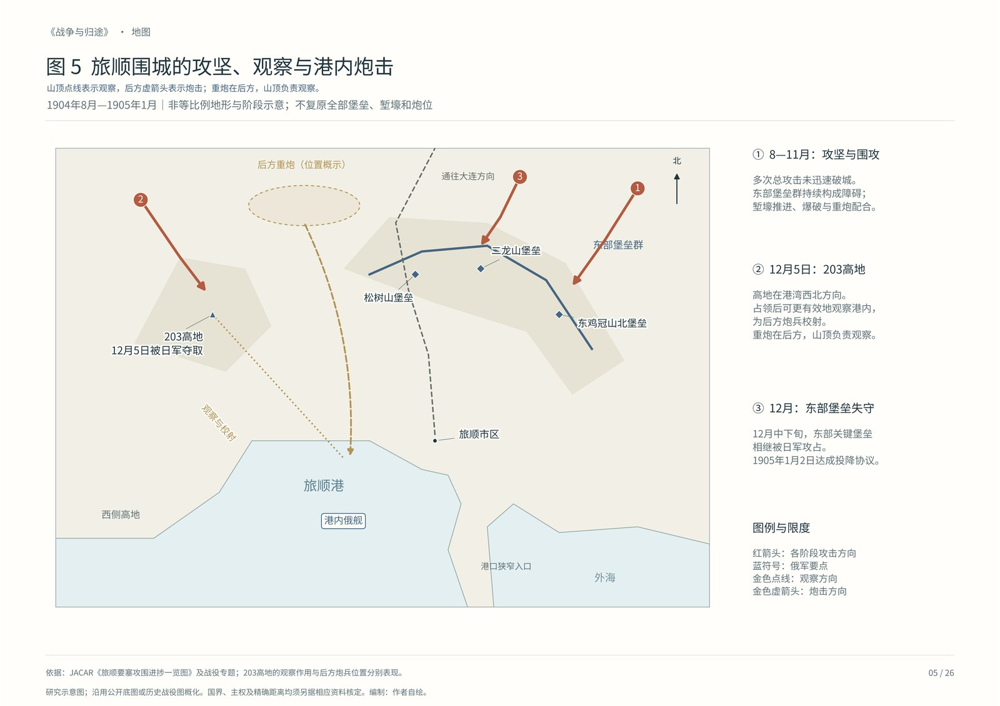
西北的203高地与东北堡垒群承担不同战场作用。日军逐步以壕沟、爆破和重炮推进，十二月五日取得高地后加强港内观察校射，随后继续攻取堡垒，至次年一月二日受降。 本页采用文字校订版。
山顶点线表示观察，后方虚箭头表示炮击。八月港内已有舰船中弹，十二月取得203高地后校射更为有效；十八日失守的具体工事是东鸡冠山北堡垒。
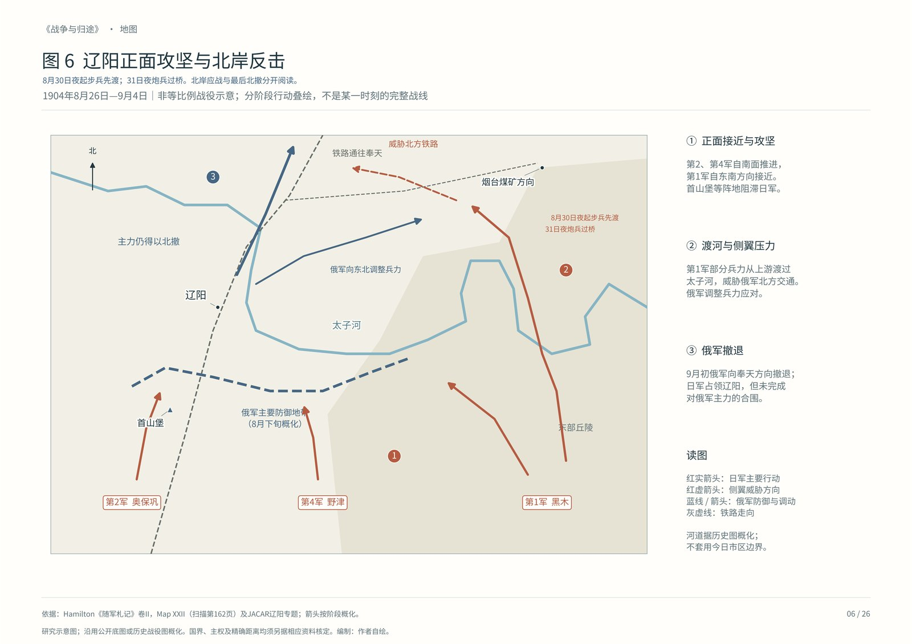
第二、第四军从南面攻坚，第一军一部从上游渡河，威胁俄军北方交通。俄方转向北岸集中反击，未能击退桥头部队，随后撤向奉天；日军取得辽阳，主要北撤线路仍通行。 本页采用文字校订版。
八月三十日夜至三十一日，步兵先渡太子河；三十一日夜，炮兵随桥梁条件改善跟进。蓝箭头分别为北岸应战和最后北撤，煤矿支线仍须与主铁路分开读。
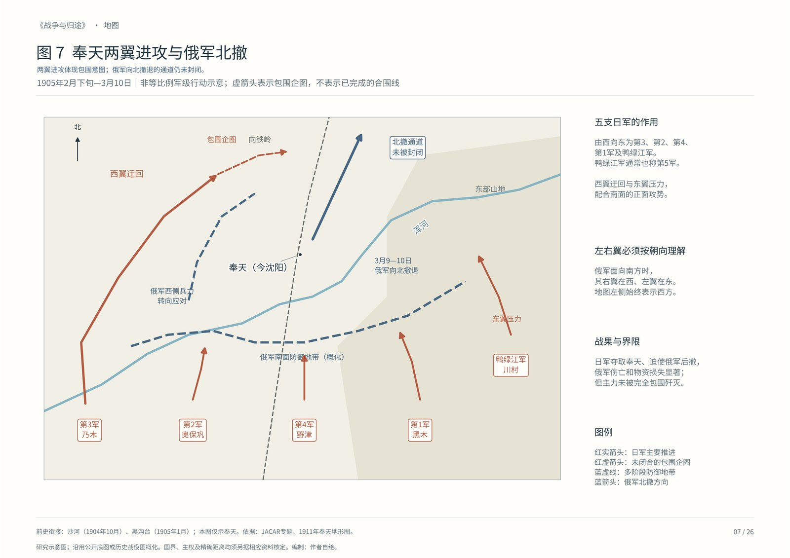
乃木第三军从西侧迂回，东路兵力和正面各军同时施压，迫使俄军反复调兵。三月九日至十日俄军经尚未闭合的间隔北撤，部分部队遭截击，主力则得以退出并重新组织。
红色虚箭头读作包围意图，蓝色开口读作受威胁的退路。不同防御线属于先后阶段，箭头粗细不表示兵力；本图只画奉天，沙河与黑沟台仍须结合第六章阅读。
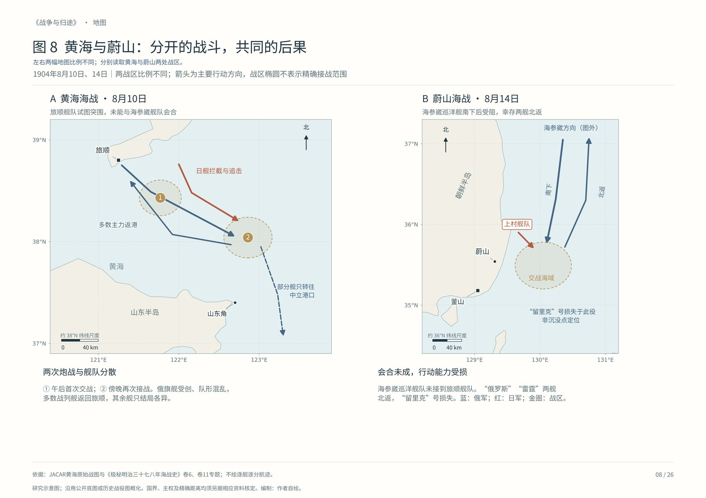
黄海海战后，俄舰一部分返回旅顺，另一些转往中立港或单独航行。四天后蔚山交战，海参崴巡洋舰队损失留里克号，两舰北返修理；远东俄舰重新集中的机会进一步缩小。
先分别阅读两个海域，再比较舰队去向。两图采用不同尺度，金色圈标示交战区域；中立港虚箭头概括分散结果，留里克号文字说明战役损失，未定位沉没点。
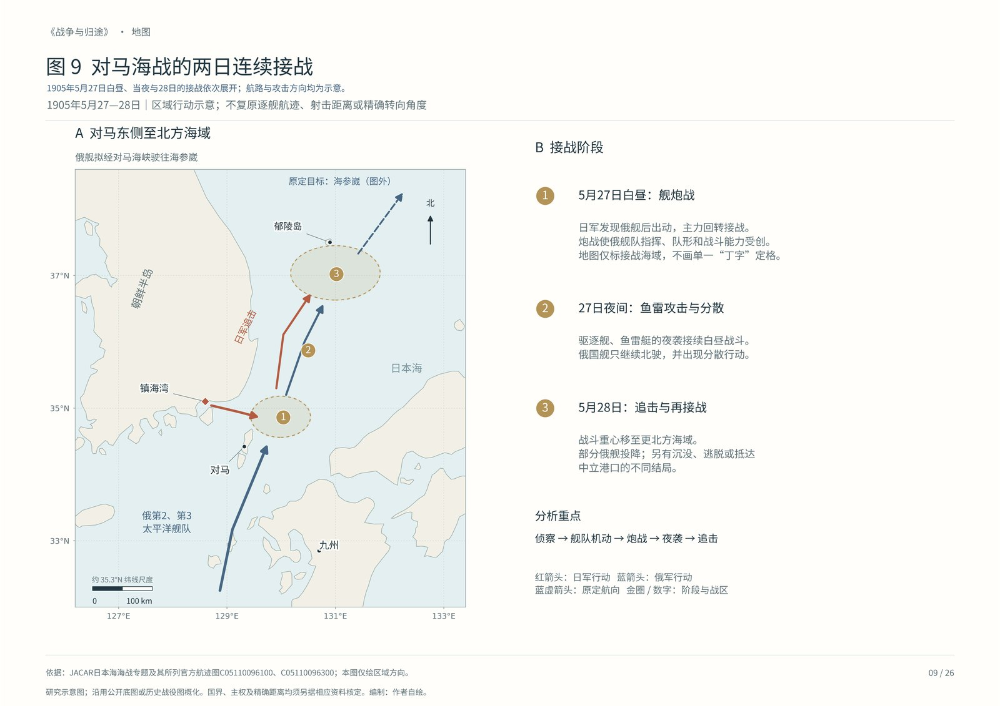
俄舰队经对马东侧北航，日本以侦察引导主力迎击。五月二十七日白昼炮战、夜间鱼雷攻击和二十八日追击接续发生，舰队指挥与队形逐步瓦解，残舰形成多种结局。 本页采用文字校订版。
顺着一、二、三读二十七日白昼、当夜和二十八日的接战。北方虚箭头指向俄舰原定目的地海参崴；实际舰只分流及各自结局，接第八章末段阅读。
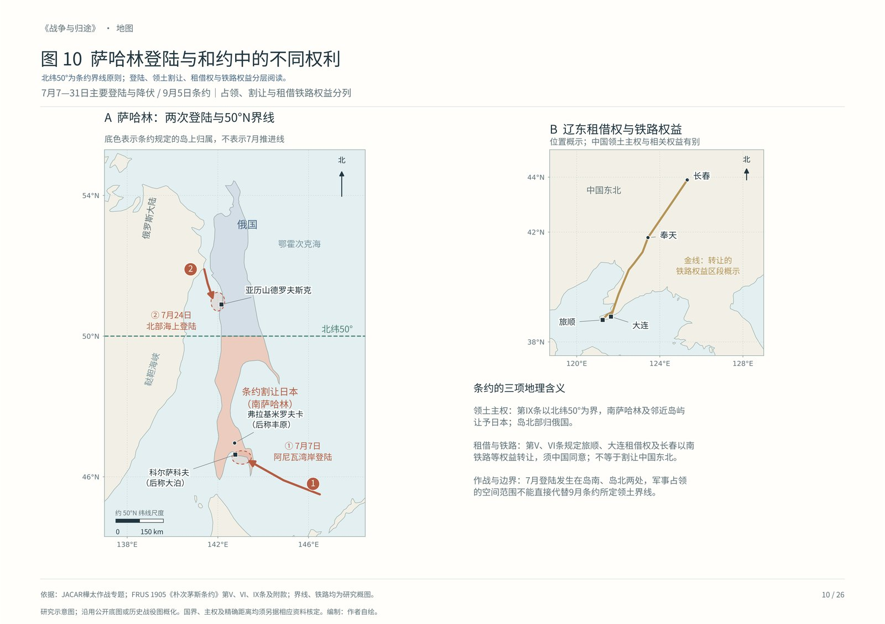
左图标出七月南北两次主要登陆，底色则展示九月和约确定的萨哈林南北归属。右图另列旅大租借与长春以南铁路权益，将俄国领土割让同中国境内相关权利的转让分开。 本页采用文字校订版。
登陆箭头是七月军事行动，岛上底色是九月条约归属，金线是铁路权益。北纬五十度为条约界线原则，租借和铁路转让须中国同意，均须连同正文条款阅读。
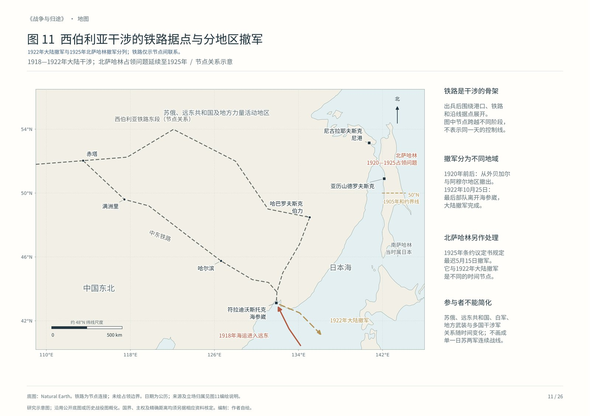
海参崴是远征的海上入口，铁路把驻军、地方盟友与资源争夺连在一起。日军1922年撤出大陆，北萨哈林则经1925年条约与分区交接另行解决。
先沿海参崴—哈尔滨—满洲里—赤塔读交通联系，再看大陆与北萨哈林的不同撤军时间。图中5月15日为条约期限；正文所据确认书记载最后分区至5月14日中午撤军。
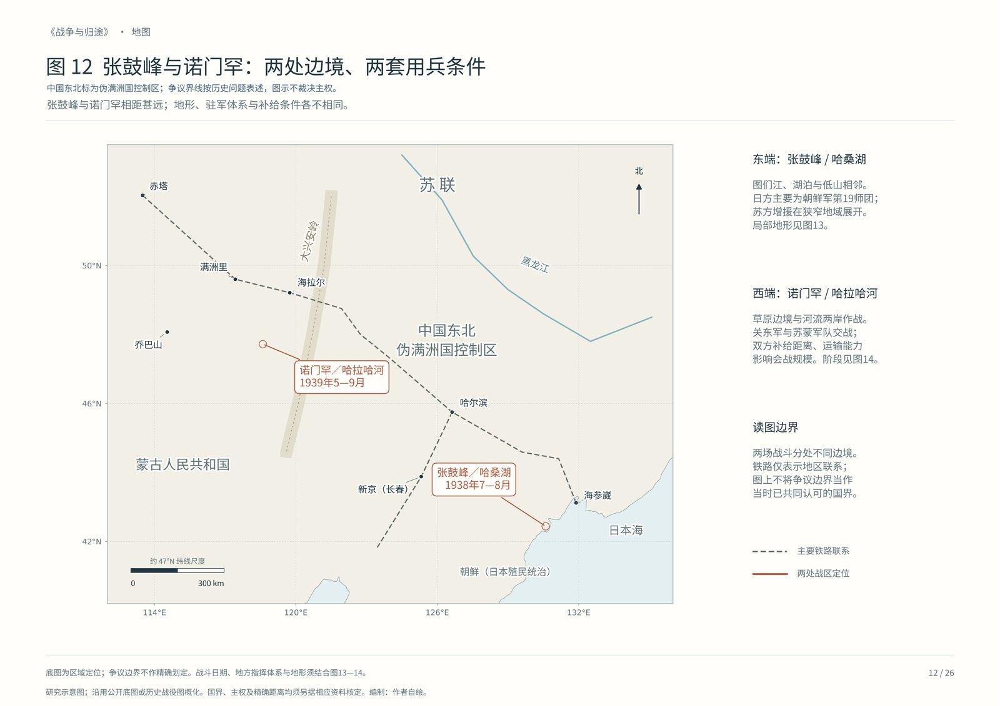
张鼓峰在图们江与哈桑湖附近，日方主力属朝鲜军；诺门罕在哈拉哈河一带，以关东军为主要指挥机关。两地的道路、地形与补给距离不同，升级的过程也各有脉络。
把东端的山地湖泊与西端的草原河流分开看。图13、14接续局部战术；本图用于定位两处战区及其铁路后方。
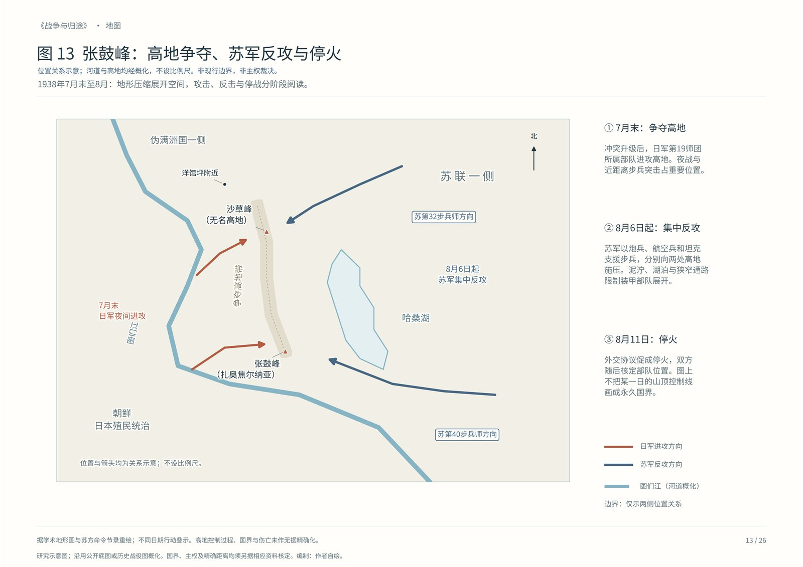
日军在7月末夜袭夺取阵地，苏军8月6日集中反攻。湖泊、沼泽和狭窄通路限制坦克展开，火力与步兵的衔接影响山地争夺；8月11日停火后，双方继续办理阵位和遗体交接。
湖在高地以东，沙草峰在张鼓峰以北；红、蓝箭头分属前后阶段。先辨地形关系，再接正文的夜袭、反攻与停火。
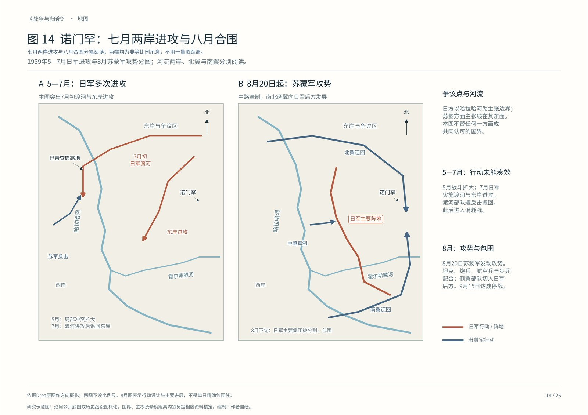
七月日军试图从两岸合击，西岸部队的补给依赖浮桥，受反击后退回东岸。八月苏蒙部队以中央牵制配合两翼推进，北翼较慢、南翼较快，包围在随后战斗中逐步形成。
左图先追踪渡河部队及东岸进攻，右图再看南北两翼怎样趋向日军后方。图面合并数日进展，结合正文分辨8月20日开攻、月底重创和9月停战。
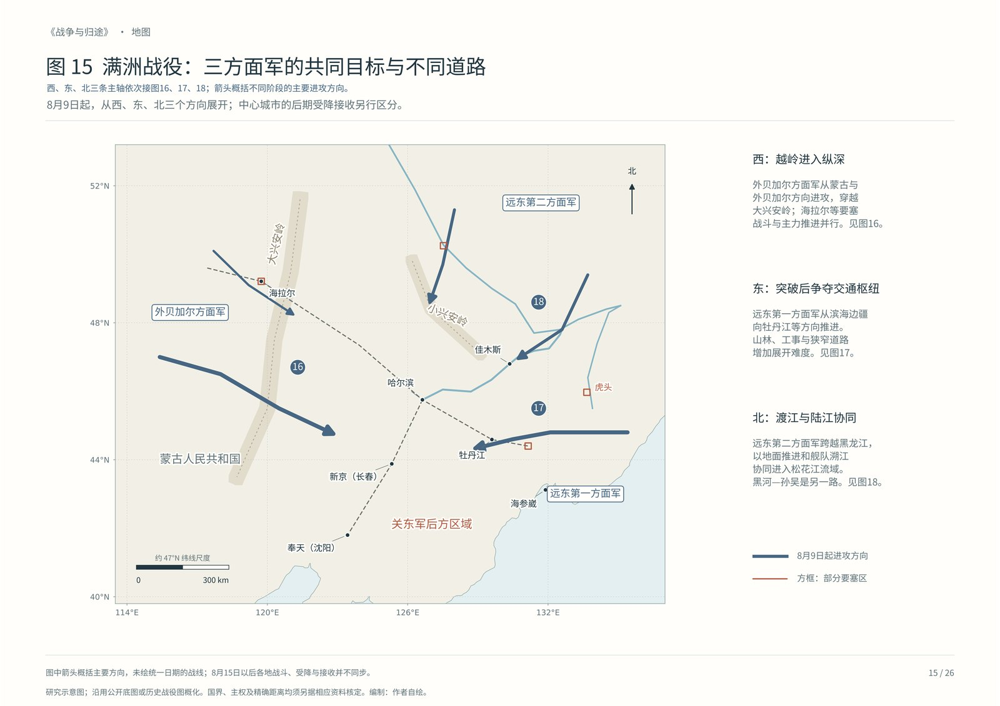
外贝加尔方面军越岭进入纵深，远东第一方面军从东部山林向牡丹江推进，远东第二方面军组织北部渡河和沿江行动。三处进攻共同争夺关东军重新集结所需的道路与时间。
先看西、东、北三条主轴，再进入图16—18读各自的地形和补给。地图中的城市是交通节点，8月下旬的进入、受降与缴械另随正文分辨。
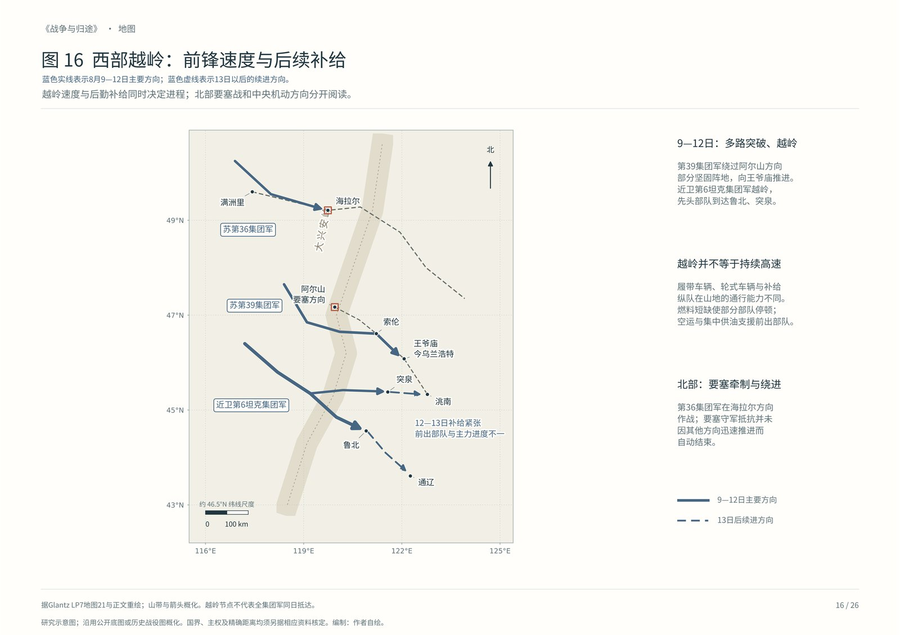
第36集团军在海拉尔方向作战，第39集团军与近卫第6坦克集团军沿不同轴线越岭、进入平原。前锋取得道路以后，还须等待燃料、车辆维修和后续部队，海拉尔攻坚则与向东推进同时进行。
把海拉尔要塞方向与中部越岭部队分开读。沿鲁北、突泉附近的箭头观察前出与跟进关系，再看正文对油料集中和分梯队行动的说明。
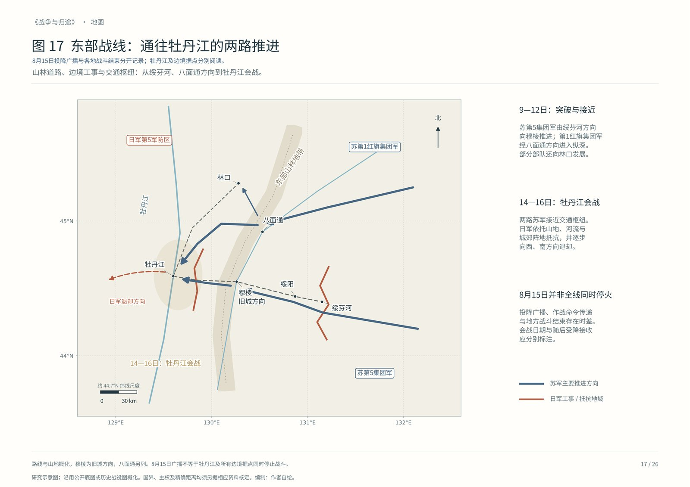
苏军第5集团军与第1红旗集团军沿不同道路接近牡丹江，日军依托山地、工事和城郊阵地抵抗并后撤。枢纽失守改变了交通与联络条件，撤出的日军继续进入后续受降程序。
先分清穆棱旧城与八面通，再看两路进攻如何接近牡丹江。正文将城市被占、部队退出和阵地失联分别叙述，图上箭头保留这一分阶段读法。
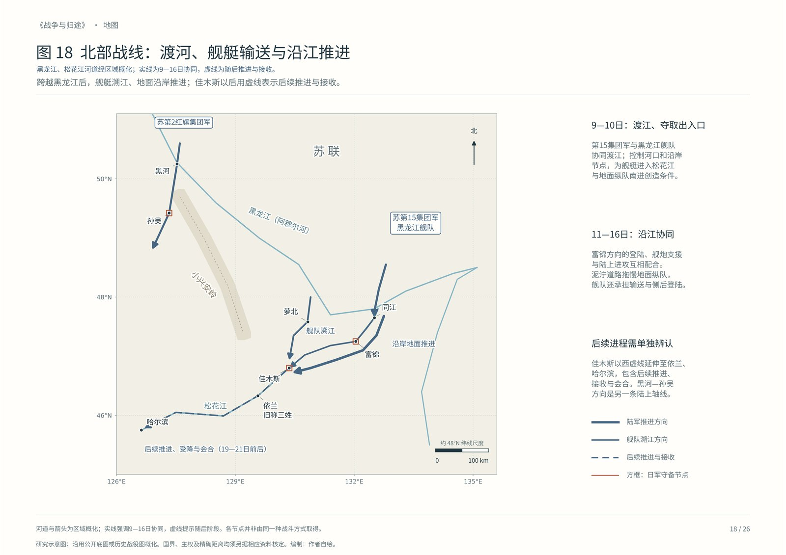
第15集团军与黑龙江舰队在富锦等方向组织渡河、登陆和沿江行动，舰艇既提供火力，也运送部队。黑河—孙吴方向另由第2红旗集团军承担；佳木斯以西继续涉及推进、接收与会合。
先看实线所示渡河和富锦方向协同，再看虚线向依兰、哈尔滨延伸的后续阶段。沿江行动与黑河—孙吴陆上轴线分开阅读。
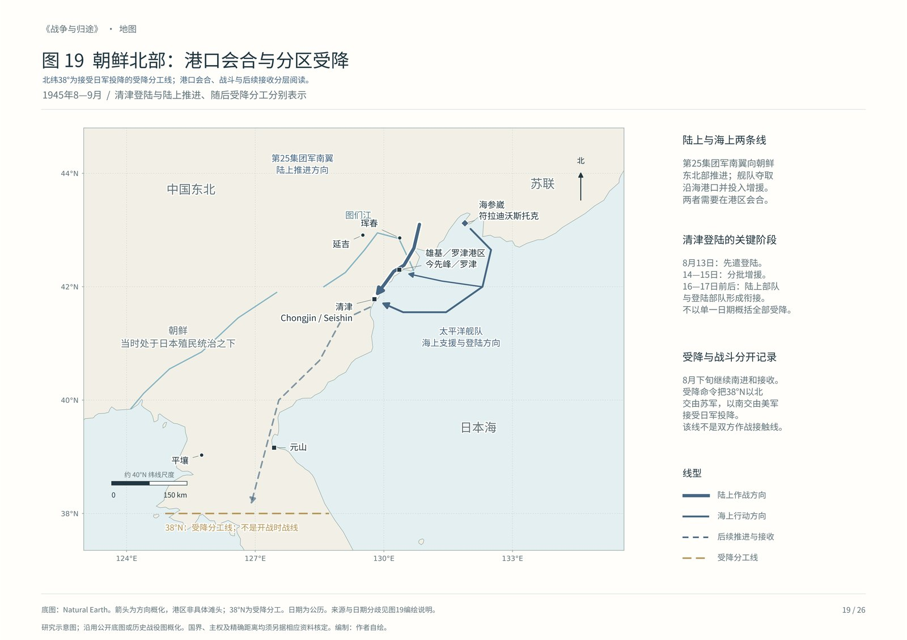
第25集团军与太平洋舰队分别从陆地和海上接近朝鲜东北部。清津经过先遣登陆、增援和陆海会合，苏军继而向元山等地行动；北纬38度线规定接受日军投降的分工。
清津按13日先遣、14—15日增援、16日主要占领任务、17日陆海会合及18日机场行动顺读。虚线延伸表示后续接收，38度线表示受降责任。
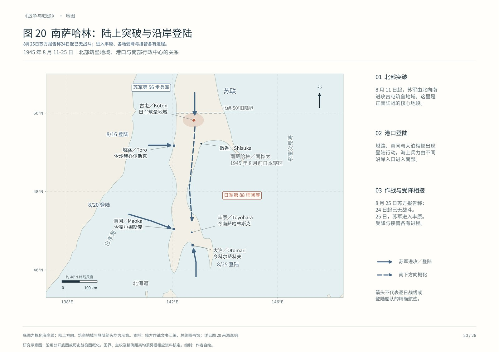
南萨哈林战役分为北部边境进攻、沿岸登陆和向南接管。苏方8月25日报告称24日起已无战斗；25日进入丰原与各地受降、接管的进程分别叙述。
先看北部越境与两栖登陆的不同方向，再顺南北交通轴线读进展。图内25日为报告及进入丰原的节点；24日起无战斗是报告中的回溯记载。
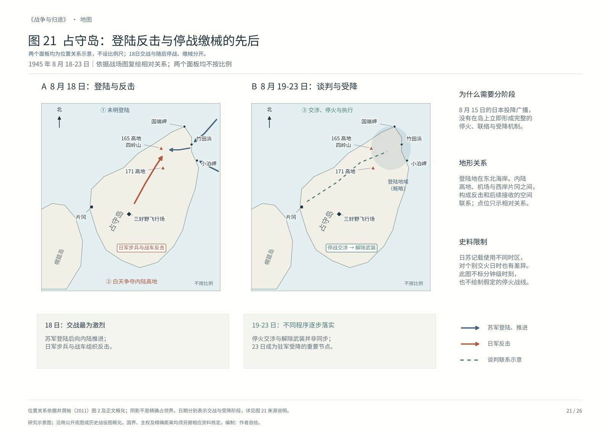
苏军18日登陆，日军以步兵和坦克反击；19日起双方展开交涉，舰艇进入、武器移交和守备部队集中仍须分别办理。23日成为接收与缴械的重要节点。
左图看登陆地、内陆高地和反击，右图看停火交涉到解除武装的联系。两个面板按相对位置绘制，绿色虚线只示谈判联系。
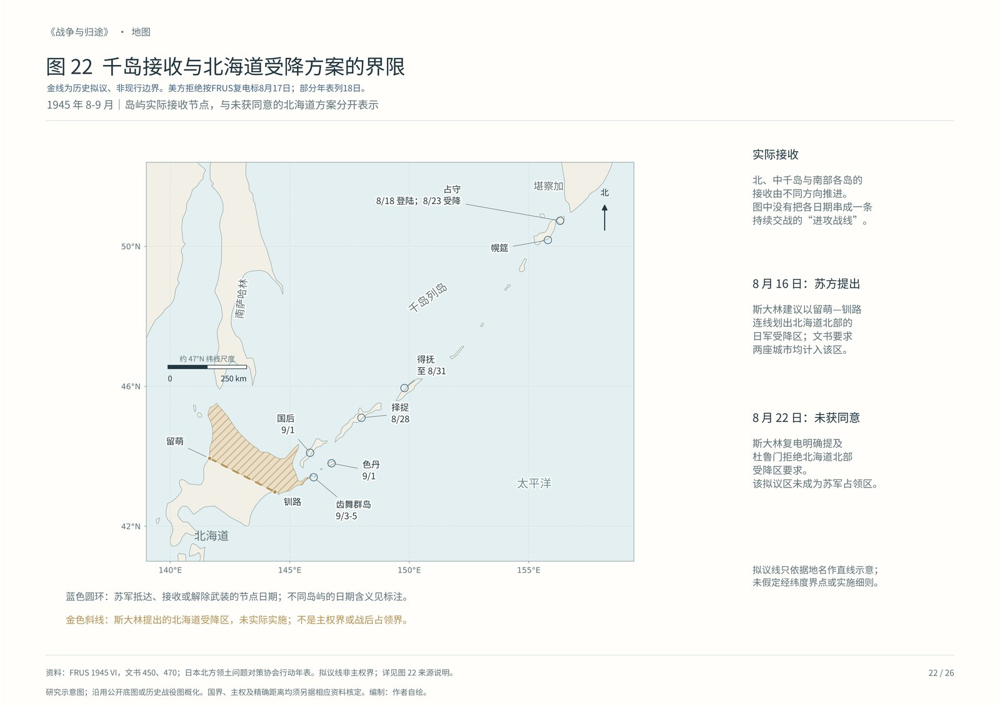
千岛各岛从不同方向接收，相关行动记录延续至9月5日。斯大林另于8月16日提出北海道北部受降区，杜鲁门17日拒绝，22日苏方复电再提此事；该方案没有成为实际占领。
蓝色节点分别对应抵达、接收或解除武装，金色斜线是拟议受降区。右栏22日指斯大林复电提及拒绝；美方拒绝日期按正文为17日。
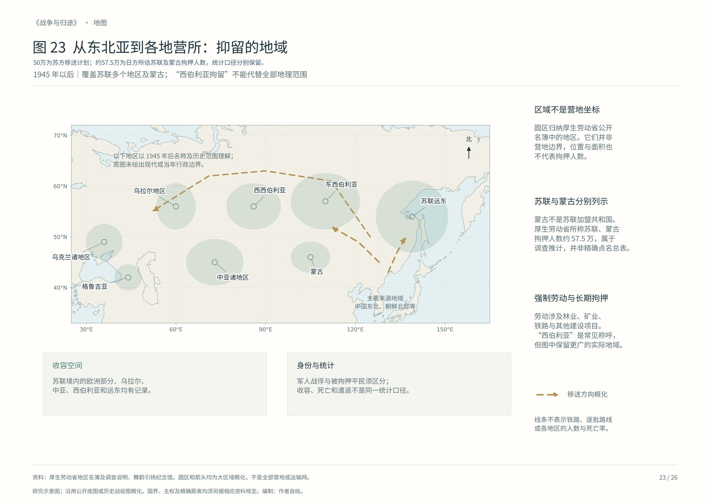
日军受降后，大批人员经登记、转运进入苏联各地的劳动与收容体系。正文中的泰舍特、塔什干分处东部西伯利亚与中亚，抑留经历因地区、工种和管理条件而有差异。蒙古另列为一个接收地区。
先看来源地域与各收容地区的距离，再回读两份个人手记。圆区表示大区域；箭头提示移送方向。第9898号决定的五十万是计划规模，图内约57.5万采用日方对旧苏联及蒙古地区的调查估计。
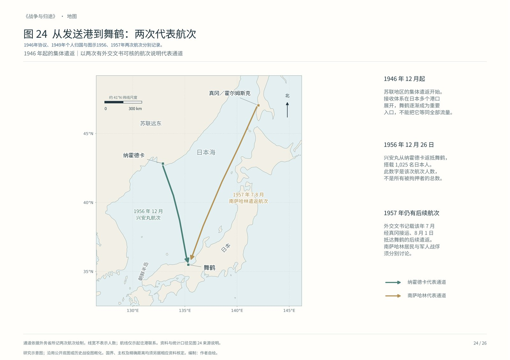
图中两条线分别连接纳霍德卡、真冈与舞鹤，列出1956年末和1957年的代表航次。第十七章沿协议、个人归途与家属等待展开，港口相连之后，仍有接收、复员和返乡的路程。
把图内1956、1957年航次同正文两人手记中的1949年归途分开阅读。兴安丸1025人为该次接回日本的人数；南萨哈林后续居民返还另有人员范围。线条示起讫港联系，抵港以后还要回到正文所述接收与返乡程序。
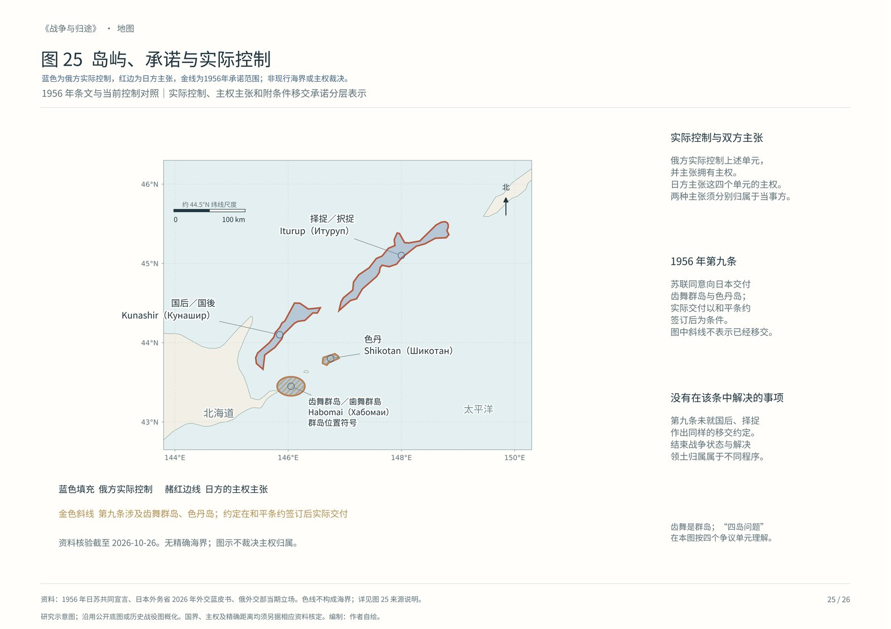
1956年共同宣言第九项对齿舞群岛与色丹岛写下移交承诺，并把实际移交放在缔结和平条约之后。图中四个单元的地理位置，与控制、主权主张、附条件承诺三种标记相互对应。
先读蓝色填充与赭红边线，再看金色斜线。前两者分别表示编图时的俄方控制及日方主权主张，斜线只标出1956年第九项涉及的齿舞、色丹。齿舞是一组岛屿，图中以位置符号概括。
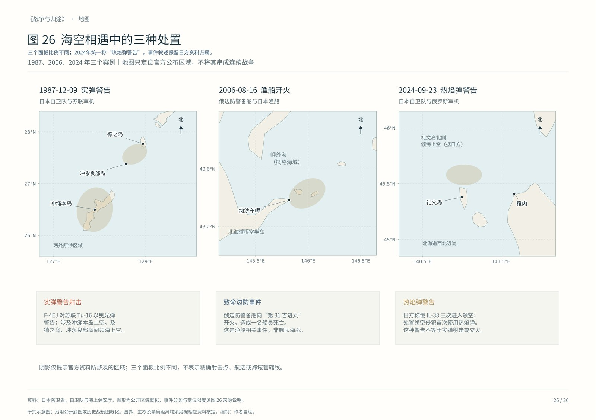
三个面板依次列出1987年航空实弹警告、2006年俄警备艇向日本渔船开火、2024年日方以热焰弹警告俄机的案例。正文集中讨论后两例，借其不同任务与后果考察危机处置；1987年一栏保留为图版补充。
分别阅读三个面板的日期、行动者和手段。阴影只提示日方资料描述的相关区域；三图比例各异。2024年的热焰弹警告与1987年的实弹警告射击须按各自记录理解。